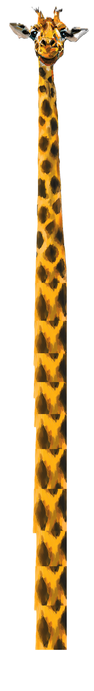
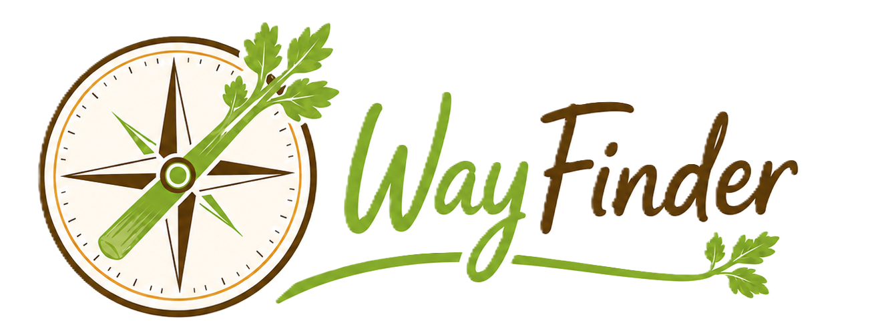

"Seek your celeries..."
Welcome to WayFinder
A place to explore possibilities, collect clues, and choose the next small step after graduation.
Starting Search-inator
Choose a location and a job family to find ideas and opportunities.
Tip: Try different combinations. Save anything that seems even slightly interesting.
Explore by Job Family
This will change your Job Family / Interest above.
Explore by Starter Job Title
Click a title to open a broad Google search for entry-level Michigan roles.
Explore Example Companies
Some examples of organizations and industries worth exploring around Michigan.
Explore their sites and others, look for benefits offered, also mentions of education assistance programs.
Discover
Generate a random search combination if you're not sure where to start.
Research Shelf
Save links that interest you. This becomes the simple “saved items” shelf.
Next Step Builder & Ideas
Delete, add, or check off tasks as you complete them.
These save in this browser only for now. This set is just an example.
Possible Next Education Steps
Graduate school is not the default answer but just one possible bridge from a broad science degree into applied directions such as systems, aerospace, data, operations, or engineering. If a whole program seems like too much look at their graduate certificate paths as bite sized credentials that usually apply credit toward the greater program if you choose to pursue it later.
Keep any in mind while looking at starting job ideas. Education assistance programs are awesome!
The first step, is finding and saving a few options that interest you.